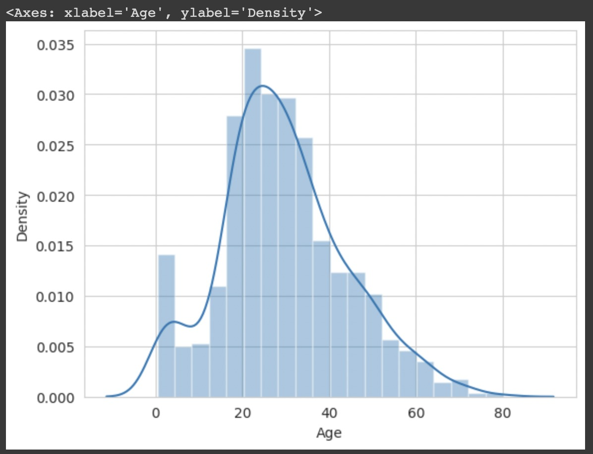
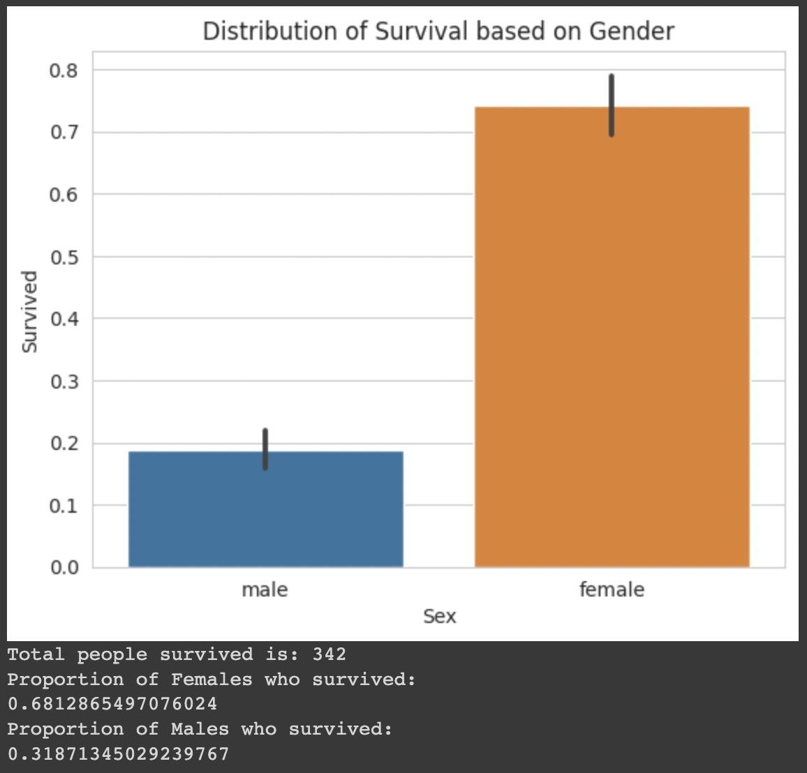
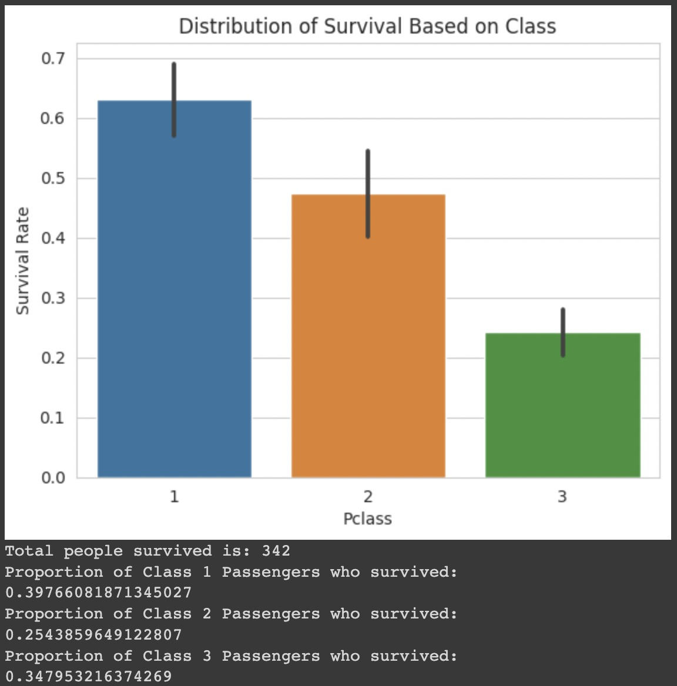
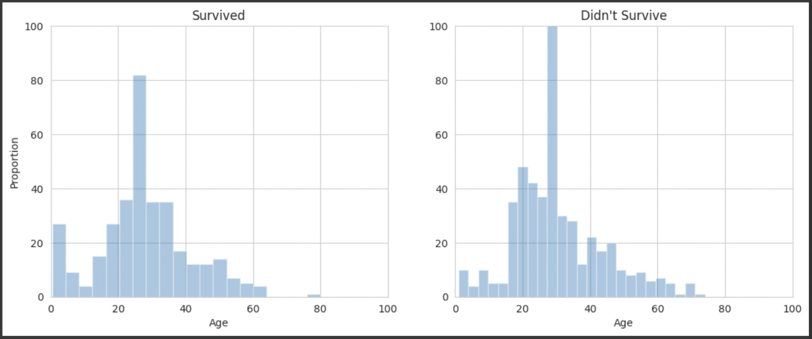
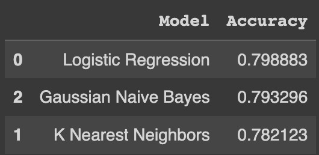

Caso de Estudio: Titanic
Análisis del problema planteado
El hundimiento del Titanic es uno de los naufragios más infames de la historia.
El 15 de abril de 1912, durante su viaje inaugural, el RMS Titanic, ampliamente considerado “insumergible”, se hundió después de chocar con un iceberg. Desafortunadamente, no había suficientes botes salvavidas para todos a bordo, lo que provocó la muerte de 1.502 de los 2.224 pasajeros y tripulantes.
Si bien hubo algún elemento de suerte involucrado en la supervivencia, parece que algunos grupos de personas tenían más probabilidades de sobrevivir que otros.
El objetivo del problema, haciendo uso de los dataset obtenidos de https://www.kaggle.com/competitions/titanic/data, es predecir, dado las características de la persona, si hubiera tenido posibilidades de sobrevivir al hundimiento del Titanic.
Atributos
-
pclass
- Nominal (1st, 2nd, 3rd)
- Clase del ticket (ej. Primera Clase, Segunda Clase)
-
sex
- Sexo del pasajero
-
age
- Edad en años del pasajero
- Fraccional si es < 1
- Si la edad es estimada, tiene el formato XX.5
-
sibsp
- Numero de hemanos/as o esposo/a a bordo del barco.
-
parch
- Numero de padres o hijos a bordo del titanic
-
ticket
- Numero del ticket
-
fare
- Tarifa del pasajero
-
cabin
- Numero de cabina en el barco
-
embarked
- Nominal (C, Q, S)
- Puerto de embarque
Identificación del tipo de problema
Dado que el atributo a predecir es una variable categorica (la supervivencia o no del hundimiento), se trata de un problema de clasificacion supervisado.
Análisis del dataset y preparación de los datos
Analisis del dataset
Se cuenta tanto con dataset para entrenamiento (con 891 registros) como para testing. En este caso utilizaremos python para realizar el procesamiento, modelado y prediccion
Cargamos los datasets
import numpy as np
import pandas as pd
import seaborn as sns
from matplotlib import pyplot as plt
sns.set_style("whitegrid")
%matplotlib inline
import warnings
warnings.filterwarnings("ignore")
import os
training = pd.read_csv("train.csv")
testing = pd.read_csv("test.csv")
Reemplazo de valores (manejo de datos faltantes e inconsistentes)
Los datos faltantes (missing values) son datos que no existen en el dataset. Dependiendo del contexto es posible que sea valido dejarlo como está o reemplazarlo con algún valor. No siempre es un problema.
Para obtener los datos faltantes ejecutamos el siguiente codigo
def null_table(training, testing):
print("Training Data Frame")
print(pd.isnull(training).sum())
print(" ")
print("Testing Data Frame")
print(pd.isnull(testing).sum())
null_table(training, testing)
Obteniendo que contamos con valores faltantes para Age y Cabin en ambos datasets.
Training Data Frame
PassengerId 0
Survived 0
Pclass 0
Name 0
Sex 0
Age 177
SibSp 0
Parch 0
Ticket 0
Fare 0
Cabin 687
Embarked 2
dtype: int64
Testing Data Frame
PassengerId 0
Pclass 0
Name 0
Sex 0
Age 86
SibSp 0
Parch 0
Ticket 0
Fare 1
Cabin 327
Embarked 0
dtype: int64
En este caso, contamos con demasiados valores faltantes en Age y Cabin
Dado que el dataset cuenta con 891 registros, no podemos permitirnos eliminar casi la totalidad solo para solucionar los valores faltantes de Cabin... aunque tampoco parece que vaya a impactar en el modelo si directamente lo eliminamos. Aprovecharemos tambien para eliminar el atributo Ticket ya que unicamente es un identificador y ambos están sumamente correlacionados con la clase del pasajero. Tambien eliminaremos Embarked ya que el puerto de embarque no afectará las posibilidades de sobrevivir, ya que las posiciones en el barco estan previamente determinadas por la clase del pasajero.
training.drop(labels = ["Cabin", "Ticket", "Embarked"], axis = 1, inplace = True)
testing.drop(labels = ["Cabin", "Ticket", "Embarked"], axis = 1, inplace = True)
null_table(training, testing)
Y ahora
Training Data Frame
PassengerId 0
Survived 0
Pclass 0
Name 0
Sex 0
Age 177
SibSp 0
Parch 0
Fare 0
dtype: int64
Testing Data Frame
PassengerId 0
Pclass 0
Name 0
Sex 0
Age 86
SibSp 0
Parch 0
Fare 1
dtype: int64
Para solucionar los datos faltantes de la edad, debemos revisar su distribucion
copy = training.copy()
copy.dropna(inplace = True)
sns.distplot(copy["Age"])

Se puede ver que esta levemente sesgada, por lo que el valor que deberiamos imputar para afectar lo menos posible seria la mediana
training["Age"].fillna(training["Age"].median(), inplace = True)
testing["Age"].fillna(testing["Age"].median(), inplace = True)
testing["Fare"].fillna(testing["Fare"].median(), inplace = True)
null_table(training, testing)
Y de esta forma logramos limpiar los datasets de valores faltantes
Training Data Frame
PassengerId 0
Survived 0
Pclass 0
Name 0
Sex 0
Age 0
SibSp 0
Parch 0
Fare 0
dtype: int64
Testing Data Frame
PassengerId 0
Pclass 0
Name 0
Sex 0
Age 0
SibSp 0
Parch 0
Fare 0
dtype: int64
Visualizacion de los datos
Supervivencia en funcion del sexo del pasajero
sns.barplot(x="Sex", y="Survived", data=training)
plt.title("Distribution of Survival based on Gender")
plt.show()
total_survived_females = training[training.Sex == "female"]["Survived"].sum()
total_survived_males = training[training.Sex == "male"]["Survived"].sum()
print("Total people survived is: " + str((total_survived_females + total_survived_males)))
print("Proportion of Females who survived:")
print(total_survived_females/(total_survived_females + total_survived_males))
print("Proportion of Males who survived:")
print(total_survived_males/(total_survived_females + total_survived_males))

El sexo del pasajero parece ser determinante al momento de predecir su supervivencia.
Supervivencia en funcion de la clase del pasajero
sns.barplot(x="Pclass", y="Survived", data=training)
plt.ylabel("Survival Rate")
plt.title("Distribution of Survival Based on Class")
plt.show()
total_survived_one = training[training.Pclass == 1]["Survived"].sum()
total_survived_two = training[training.Pclass == 2]["Survived"].sum()
total_survived_three = training[training.Pclass == 3]["Survived"].sum()
total_survived_class = total_survived_one + total_survived_two + total_survived_three
print("Total people survived is: " + str(total_survived_class))
print("Proportion of Class 1 Passengers who survived:")
print(total_survived_one/total_survived_class)
print("Proportion of Class 2 Passengers who survived:")
print(total_survived_two/total_survived_class)
print("Proportion of Class 3 Passengers who survived:")
print(total_survived_three/total_survived_class)

Como era de esperarse, aquellos pasajeros de primera y segunda clase tienen mas chances de sobrevivir el hundimiento.
Supervivencia en funcion de la edad del pasajero
survived_ages = training[training.Survived == 1]["Age"]
not_survived_ages = training[training.Survived == 0]["Age"]
plt.subplot(1, 2, 1)
sns.distplot(survived_ages, kde=False)
plt.axis([0, 100, 0, 100])
plt.title("Survived")
plt.ylabel("Proportion")
plt.subplot(1, 2, 2)
sns.distplot(not_survived_ages, kde=False)
plt.axis([0, 100, 0, 100])
plt.title("Didn't Survive")
plt.subplots_adjust(right=1.7)
plt.show()

En estas graficas no es tan claro como en las anteriores, pero en general se puede ver que aquellas personas mas jovenes tienen mas chaces de supervivencia.
Modelado
Dado que se trata de un problema de clasificacion, primero pasaremos el atributo Age de tipo categorico a numerico.
from sklearn.preprocessing import LabelEncoder
le_sex = LabelEncoder()
le_sex.fit(training["Sex"])
encoded_sex_training = le_sex.transform(training["Sex"])
training["Sex"] = encoded_sex_training
encoded_sex_testing = le_sex.transform(testing["Sex"])
testing["Sex"] = encoded_sex_testing
Tambien eliminaremos el nombre de los tripulantes.
training.drop("Name", axis = 1, inplace = True)
testing.drop("Name", axis = 1, inplace = True)
Y reescalaremos Age y Fare para que sean mas representativos y no parezcan mas importantes que otras.
from sklearn.preprocessing import StandardScaler
scaler = StandardScaler()
ages_train = np.array(training["Age"]).reshape(-1, 1)
fares_train = np.array(training["Fare"]).reshape(-1, 1)
ages_test = np.array(testing["Age"]).reshape(-1, 1)
fares_test = np.array(testing["Fare"]).reshape(-1, 1)
training["Age"] = scaler.fit_transform(ages_train)
training["Fare"] = scaler.fit_transform(fares_train)
testing["Age"] = scaler.fit_transform(ages_test)
testing["Fare"] = scaler.fit_transform(fares_test)
Ahora que los datos fueron procesados, podemos empezar a construir los modelos
#Models
from sklearn.svm import SVC, LinearSVC
from sklearn.ensemble import RandomForestClassifier
from sklearn.linear_model import LogisticRegression
from sklearn.neighbors import KNeighborsClassifier
from sklearn.naive_bayes import GaussianNB
from sklearn.tree import DecisionTreeClassifier
#Performance
from sklearn.metrics import make_scorer, accuracy_score
#Model Selection
from sklearn.model_selection import GridSearchCV
X_train = training.drop(labels=["PassengerId", "Survived"], axis=1)
y_train = training["Survived"]
X_test = testing.drop("PassengerId", axis=1)
from sklearn.model_selection import train_test_split
X_training, X_valid, y_training, y_valid = train_test_split(X_train, y_train, test_size=0.2, random_state=0)
Naive Bayes
gnb_clf = GaussianNB()
parameters_gnb = {}
grid_gnb = GridSearchCV(gnb_clf, parameters_gnb, scoring=make_scorer(accuracy_score))
grid_gnb.fit(X_training, y_training)
gnb_clf = grid_gnb.best_estimator_
gnb_clf.fit(X_training, y_training)
pred_gnb = gnb_clf.predict(X_valid)
acc_gnb = accuracy_score(y_valid, pred_gnb)
print("The Score for Gaussian NB is: " + str(acc_gnb))
The Score for Gaussian NB is: 0.7932960893854749
k-NN
knn_clf = KNeighborsClassifier()
parameters_knn = {"n_neighbors": [3, 5, 10, 15], "weights": ["uniform", "distance"], "algorithm": ["auto", "ball_tree", "kd_tree"],
"leaf_size": [20, 30, 50]}
grid_knn = GridSearchCV(knn_clf, parameters_knn, scoring=make_scorer(accuracy_score))
grid_knn.fit(X_training, y_training)
knn_clf = grid_knn.best_estimator_
knn_clf.fit(X_training, y_training)
pred_knn = knn_clf.predict(X_valid)
acc_knn = accuracy_score(y_valid, pred_knn)
print("The Score for KNeighbors is: " + str(acc_knn))
The Score for KNeighbors is: 0.7821229050279329
Logistic Regression
logreg_clf = LogisticRegression()
parameters_logreg = {"penalty": ["l2"], "fit_intercept": [True, False], "solver": ["newton-cg", "lbfgs", "liblinear", "sag", "saga"],
"max_iter": [50, 100, 200], "warm_start": [True, False]}
grid_logreg = GridSearchCV(logreg_clf, parameters_logreg, scoring=make_scorer(accuracy_score))
grid_logreg.fit(X_training, y_training)
logreg_clf = grid_logreg.best_estimator_
logreg_clf.fit(X_training, y_training)
pred_logreg = logreg_clf.predict(X_valid)
acc_logreg = accuracy_score(y_valid, pred_logreg)
print("The Score for Logistic Regression is: " + str(acc_logreg))
The Score for Logistic Regression is: 0.7988826815642458
Comparación
Para comparar las performances de los modelos ejecutamos el siguiente codigo
model_performance = pd.DataFrame({
"Model": ["Logistic Regression", "K Nearest Neighbors", "Gaussian Naive Bayes"],
"Accuracy": [acc_logreg, acc_knn, acc_gnb]
})
model_performance.sort_values(by="Accuracy", ascending=False)

Podemos ver que el modelo mas adecuado para este problema es el de Regresión Logística.
Y así finaliza el proceso.